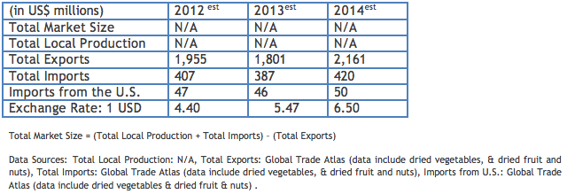

The food and beverage (F&B) industry is one of the main industries contributing to the Argentine economy, accounting for 33 percent of Argentina’s total exports. Some of its main trends are as follows: 1. significant investments in technology updates; 2. local production capacity being fully used, which requires additional investments to supply the growing food demand; 3. “Health and Nutrition” considered a strong concept in the F&B business; 4. greater interaction between the local industry and universities, fostering innovation.
The main ingredients imported were those that are not manufactured locally or their production is not sufficient to supply the local industry. There is a significant market for some U.S. food ingredients among local producers of ingredients, who use them to manufacture high-value, tailor-made food products. However, Argentine F&B imports for 2013 are projected to slightly decline, as a result of the slowdown of the country’s economy, and the trade restrictive measures taken by the government of Argentina (GOA) which are adversely affecting imports. The GOA is expected to continue to closely monitor imports as a means of trying to maintain a surplus trade balance by restricting imports and promoting exports.
Return to Top
Whey; dried vegetables; dried fruit and nuts; spices; potato flakes; granules and pellets; wheat starch; corn starch; potato starch; herbs; extracts of licorice; extracts of vegetables, meat, and fish; pectic substances; agar-agar; glycerol; glucose; fructose; molasses; cocoa powder; extracts of coffee and tea; yeasts; soy sauce; protein concentrates and textured protein substances; gelatin; non-dairy coffee whiteners; cream and milk substitutes; sugar substitutes; essential oils; casein; albumins; peptones; dextrins; glues; ingredients for functional foods and for the beverage industry; nutraceuticals; algae omega.
Return to Top
U.S. food ingredients are locally considered to be high quality and safe products. As a consequence of the declining value of the Argentine peso vis-à-vis the dollar, U.S. products are still more competitive than European products. Best opportunities are for tailor-made food ingredients that are demanded for the manufacturing of more sophisticated food items, and ingredients that are not produced locally
Return to Top
• Institute of Food Technologists (IFT): http://www.ift.org/
• National Association of Flavors and Food-Ingredient Systems (NAFFS): http://www.naffs.org/
• Global Trade Atlas: http://www.gtis.com
• Various food industry contacts, primarily former participants of USDA/FAS Buenos Aires-sponsored trade missions to the IFT Annual Food Expo.